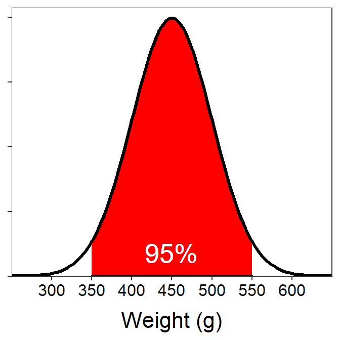
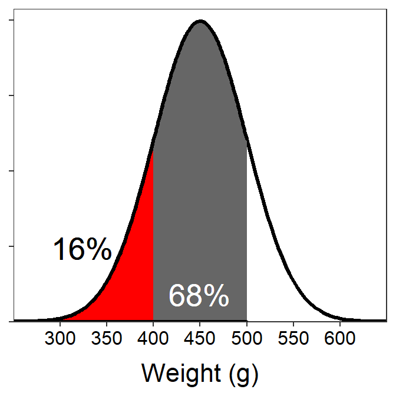
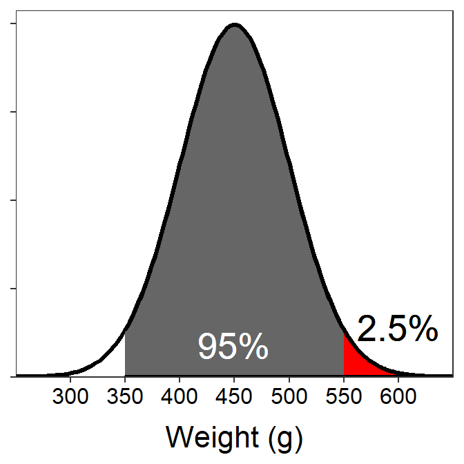

We see that 550 is exactly 2σ above μ. Thus, there is 95% between 350 (2σ below μ) and 550, 5% outside of that range, and 2.5% in each tail outside of that range. Thus, 2.5% are greater than 550.

This follows directly from the middle part of the 68-95-99.7% Rule because 350 is exactly 2σ below μ and 550 is exactly 2σ above μ.

We see that 550 is exactly 2σ above μ. Thus, there is 95% between 350 (2σ below μ) and 550, 5% outside of that range, and 2.5% in each tail outside of that range. Thus, 2.5% are greater than 550.
We see that 400 is exactly 1σ below μ. Thus, there is 68% between 400 and 500 (1σ above μ), 32% outside of that range, and 16% in each tail outside of that range. Thus, 16% are less than 400.
Referring to the plot in the previous question, we see that 500 is exactly 1σ above μ, there is 68% between 400 and 500, and 16% in each tail outside of that range. Thus, the percentage less than 500 g is the 68% between 400 and 500 g plus the 16% that is less than 400 g; for a total of 84%.
From the previous question we know that 84% of wood ducks weigh less than 500 g. However, this 84% contains wood ducks that weigh less than 350 g, which we do not want considered in this question. From question 2, we know that 2.5% of wood ducks weigh less than 350 g. Thus, 84-2.5=81.5% of wood ducks weigh less than 500 g, but not less than 350 g (or weigh between 350 and 500 g).
Most common means starting in the middle of the normal distribution and radiating to the tails. This question ends on the first part of the 68-95-99.7% Rule and, thus, 68% of the wood ducks are between 1σ below μ (=400) and 1σ above μ (=500).
This percentage should sound familiar from the previous questions. With that experience you know that 16% is in the tails outside of the 68% range. This questions asks for the lightest wood ducks so it would be to left (or lower) tail of the normal distribution. Thus, the lightest 16% of wood ducks are less than 1σ below μ (=400).

Again, this percentage should sound familiar from the previous questions. With that experience you know that 2.5% is in the tails outside of the 95% range. This questions asks for the heaviest wood ducks so it would be to right (or upper) tail of the normal distribution. Thus, the heaviest 2.5% of wood ducks are more than 2σ above μ (=550).
